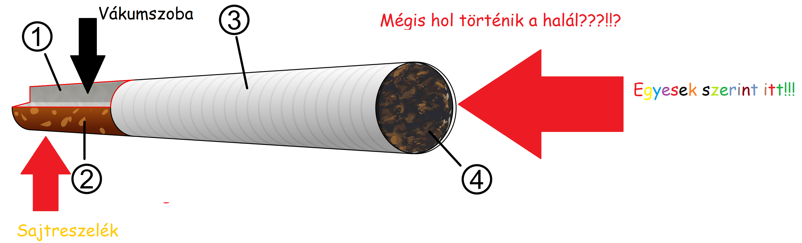
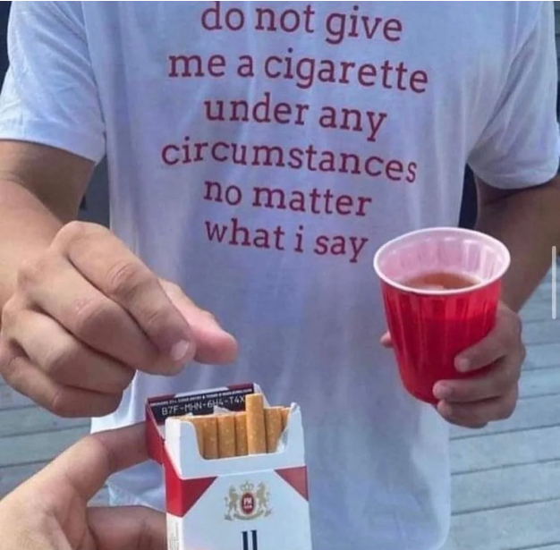
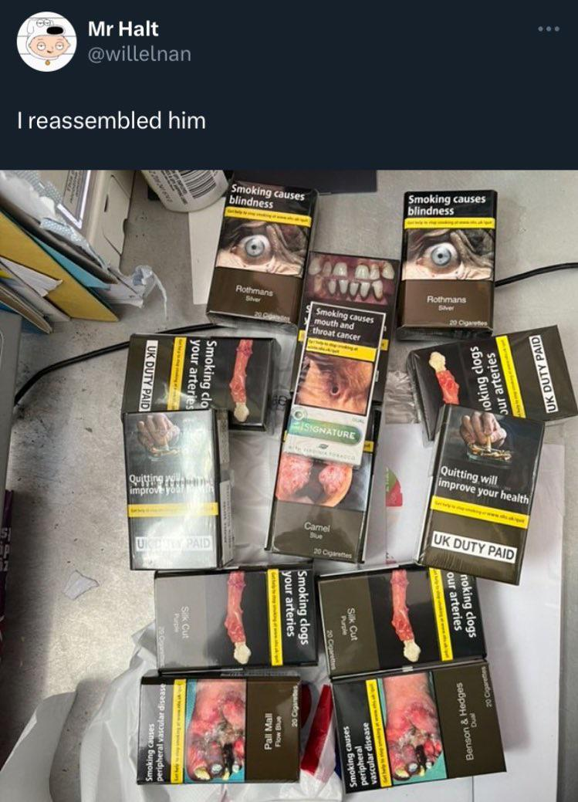
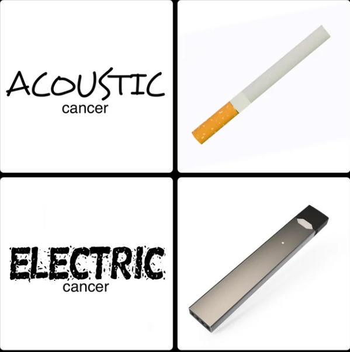
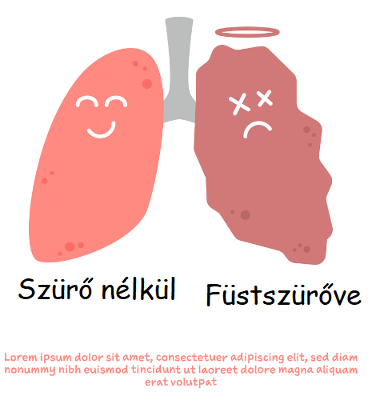
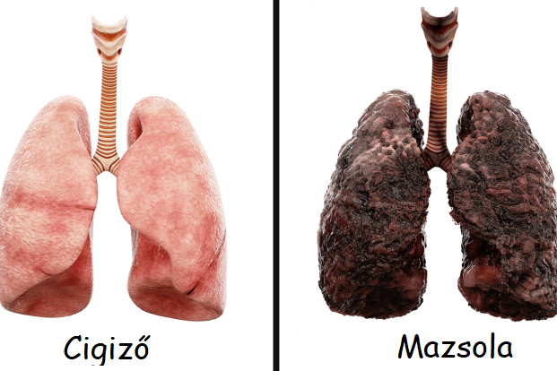

A ts1g4r3tt4
A cigaretta a dohánytermékek közé tartozó élvezeti cikk, melynek fogyasztása elterjedt szokás a világ nagy részén. A cigarettaszálak kis tekercsnyi apró, vékony szálakra vágott dohányból, cigarettaszűrőből, és ezek vékony papírborításából állnak. A legtöbb modern cigaretta tartalmaz szűrőt, bár használatuk nem csökkenti a dohányzás ártalmait, sőt, egyes kutatások szerint még nőhetnek is az egészségügyi kockázatok.
A cigaretta szó általában a dohánylevélből készült cigarettára utal, de más növényekből is készítenek hasonlót, például cannabisból.
Története
A cigaretta legkorábbi formáit Közép-Amerikában használták a kilencedik század körül, vékony dohányrudak és más segédeszközök kíséretében, de innen ered a pipázás szokása is. Az első cigarettaszerű tárgyak inkább a mai szivarra, mint cigarettára emlékeztettek. A maja, később az azték civilizációban elsősorban rituális szertartásokban használták, gyakran más pszichoaktív drogokkal együtt, vallásos önkívület elérésére. Agyagból készült használati tárgyakon, templomi metszeteken ábrázoltak dohányzó vallásos főméltóságokat vagy isteneket.
Előállítása
A kereskedelmi célzattal gyárilag előállított cigaretta látszólag egyszerű tárgy: alapvetően dohánykeveréket, papírt, a külső réteget összetartó ragasztót és többnyire cellulóz-acetát alapú szűrőt tartalmaz.[8] Míg magának a cigarettának az előállítása viszonylag egyszerű, a gyártók nagy figyelmet szentelnek a dohányösszetevőkre, amelyeknek a hagyományosan kevert cigarettákban van nagy szerepe. Összesen mintegy 5000 olyan adalékanyagot regisztráltak a hatóságok világszerte, amit cigarettagyártás során használhatnak.[9] Ezeknek túlnyomó többsége vagy technikai adalékanyag – ami például segíti a dohányt nedvesen tartani az aprítás során, vagy pótolja a szárítás során elveszett természetes növényi cukrot -, vagy ízanyag, amivel maguknak az egyes dohányfajtáknak a karakterisztikus ízeit hangsúlyozzák.

Egészségügyi kérdések
A cigarettában található elsődleges pszichoaktív kémiai anyag – a nikotin – függőséget okozhat. A terhes nők dohányzásával kapcsolatban kimutatták, hogy a cigaretta használata születési rendellenességeket, szellemi és testi fogyatékosságot okozhat. A cellulóz-acetát és a szénrészecskék cigaretta általi belélegzése pedig tüdőrákot okozhat.

Dedikáció
Grafika a cigarettás dobozokon
Sok országban kötelező a cigarettásdobozokon egészségügyi figyelmeztetést elhelyezni. Az egyik első ilyen ország az Egyesült Államok volt, de ide tartozik Kanada, az európai országok, Ausztrália és több ázsiai ország is.

Elektronikus cigaretta
Az elektronikus cigaretta a nikotinbevitel alternatívája, mely kinézetében hasonlít a cigarettára, de füst nem termelődik. Viszonylag új keletű megjelenése miatt hatásai még nem ismertek. Használata több országban is illegális, például Új-Zélandon, Ausztráliában és Szingapúrban, más országokban, például Kanadában és Dániában hatósági engedély szükséges a forgalmazásához.

Cigarettaszűrő
Az általánosan elterjedt neve a cigaretta elszívás utáni maradékának a cigarettacsikk, filter vagy szűrő. A szűrő általában a cigaretta teljes hosszúságának a 30%-át teszi ki. A filter egy papírhengerben van, ez tartalmazza a dohány és a hamu maradékának egy részét, valamint a kátrányt. Különleges esetekben a szűrő kisebb mértékben megég, ha túl sokáig szívják a cigarettát. A cigaretta vége sok közvélemény-kutatás tárgya, hogy az emberek ez alapján hogyan értékelik, ítélik meg a márkát, illetve a gyártót.

A cigaretta által okozott környezetkárosítás
A csikk olyan – a cigarettából származó – vegyi anyagokat tartalmaz, amelyek szennyezik az élővizeket és az ivóvízkészleteket. Egy 2014-es tanulmányban halakon vizsgálták a cigaretta és a szűrő hatásait. Ennek során azt állapították meg, hogy a vízben lévő, ép, teljes cigaretta, valamint a visszamaradt csikk is mérgező hatású volt a kísérletben részt vevő fajokra. Ehhez viszonylag alacsony koncentráció is elég volt, így már 1-2 cigarettacsikk is elég volt literenként, hogy 96 órán belül halált okozzon a halak 50%-ának. Ugyanezen tanulmányban azt is megállapították, hogy a használt cigarettaszűrő mérgezőbb hatású, mint az új, használaton még nem átesett szűrő.[33]
